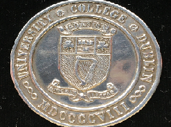
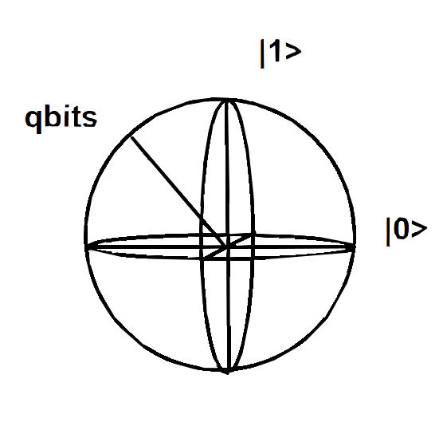

The project is about considering objects which have some connection with physics. Your contribution will be welcome, please share on twitter your thoughts and comments. !
| Object Name | Description | Image |
|---|---|---|
| T.E. Nevin Medal | This medal is awarded to the student in Experimental Physics who has obtained First Class Honours and first place in the BSc (Honours) Degree Examination in Physics. It was established in honour of Prof. Thomas E. Nevin (1906 – 1986) who had a distinguished career in the field of molecular spectroscopy and was Head of Department in UCD Physics from 1952 to 1979 and Dean of the faculty of Science from 1963 -1979 |  |
| quantum bits | see computer scence pages |  |